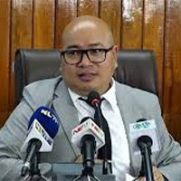

ABOUT
JOHNNY RUANGMEI: A MULTIFACETED LEADER SHAPING NAGALAND'S FUTURE
Johnny Ruangmei stands out as a dynamic leader whose career transcends traditional roles. As the Joint Chief Executive Officer (JCEO) of the Nagaland State Disaster Management Authority (NSDMA) since 2021, Johnny has been at the forefront of disaster management, yet his influence reaches far beyond administrative duties. His life is a rich tapestry woven from his roles as a dedicated family man, accomplished diplomat, political visionary, innovative entrepreneur, and profound spiritual mystic.
A Proven Leader in Disaster Management
In his capacity as the JCEO of NSDMA, Johnny Ruangmei has been pivotal in developing and implementing robust disaster response strategies across Nagaland. Under his leadership, the NSDMA has enhanced its readiness for natural calamities, emphasizing community engagement and strategic planning. His commitment to safety and resilience not only underscores his administrative expertise but also reflects his forward-thinking approach to regional challenges.
A Diplomat and Political Visionary
Johnny's career is not confined to disaster management. As a seasoned diplomat and political visionary, he brings a unique blend of strategic insight and empathetic leadership to every endeavor. His diplomatic skills have been instrumental in fostering collaborations among governmental agencies, NGOs, and international partners. With an eye on sustainable development and socio-political reform, Johnny advocates for policies that ensure long-term stability and progress for the community.
Entrepreneurial Spirit and Innovative Drive
Beyond his official responsibilities, Johnny Ruangmei is a dynamic entrepreneur. His innovative mindset has led him to explore ventures that drive economic growth and social development. Whether through initiating business projects or mentoring budding entrepreneurs, Johnny's entrepreneurial spirit has consistently paved the way for groundbreaking solutions that bridge traditional practices with modern advancements.

A Devoted Family Man
Amid his multifaceted career, Johnny remains deeply committed to his family. His role as a family man grounds his public endeavors in strong personal values. He believes that the strength of a community begins at home, and his commitment to nurturing family bonds is a testament to the integrity and compassion that drive his leadership style.
Embracing the Path of a Spiritual Mystic
Johnny Ruangmei's journey is enriched by his exploration of spirituality. As a spiritual mystic, he has cultivated a deep connection with his inner self, drawing on ancient wisdom and modern insights to navigate life's complexities. This spiritual dimension informs his decision-making, encouraging a balanced perspective that integrates mental, emotional, and spiritual well-being into his professional and personal life.
A Vision for a Resilient and Progressive Future
Johnny's diverse experiences converge to create a holistic approach to leadership. His work with NSDMA, combined with his roles as a diplomat, entrepreneur, and spiritual guide, highlights his unwavering commitment to building a resilient and progressive future for Nagaland. With each endeavor, Johnny Ruangmei inspires communities to embrace change, work collaboratively, and strive for excellence in every aspect of life.
By harmonizing disaster management expertise with diplomatic acumen, entrepreneurial innovation, and spiritual insight, Johnny Ruangmei has emerged as a beacon of comprehensive leadership. His story is one of dedication, vision, and the power of a multifaceted approach to transforming society.